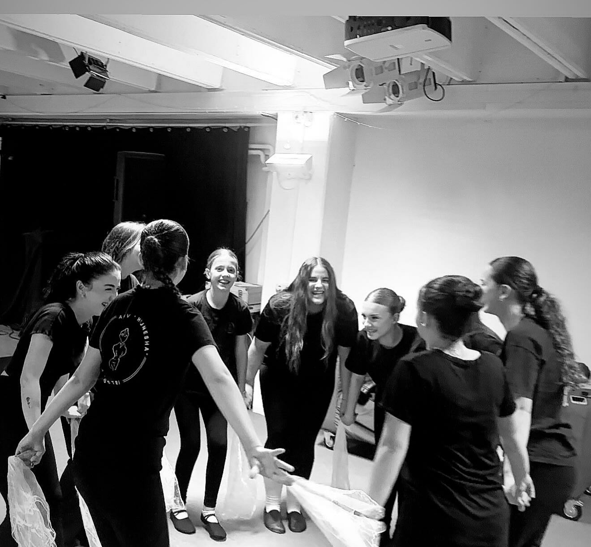
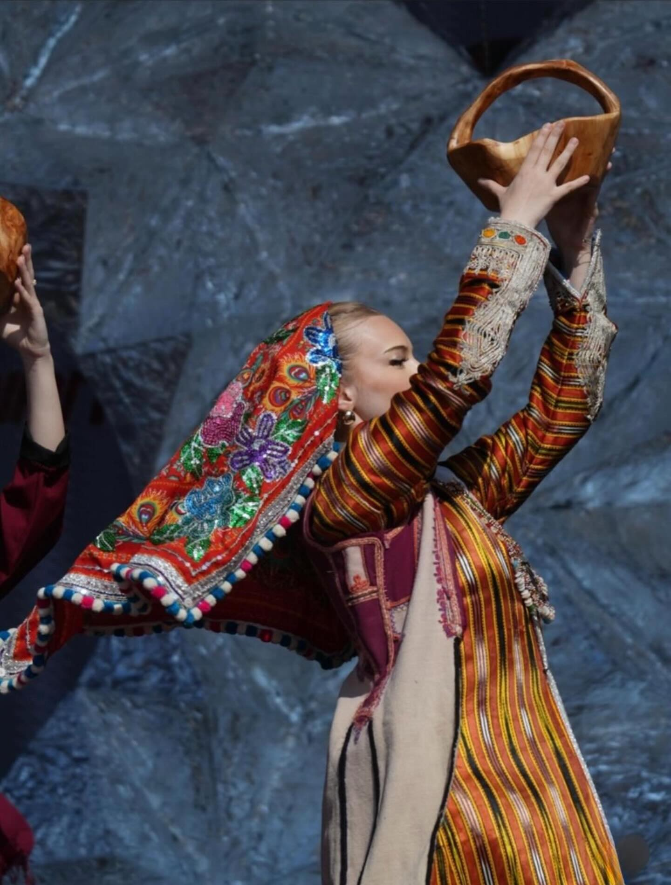
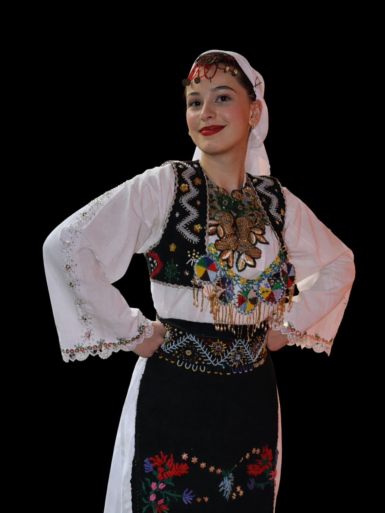

Wir tanzen, weil manche Dinge nicht im Archiv leben können. Ein Schritt, ein Atemzug, eine Hand im Kreis: Das sind keine Erinnerungsstücke. Sie werden erst wirklich, wenn jemand sie wieder bewegt.Ne vallëzojmë sepse disa gjëra nuk mund të jetojnë vetëm në arkiv. Një hap, një frymëmarrje, një dorë në rreth: këto nuk janë kujtime të mbyllura. Ato bëhen të vërteta kur dikush i lëviz përsëri.We dance because some things cannot live only in an archive. A step, a breath, a hand in the circle: these are not closed memories. They become real when someone moves them again.
In der Probe beginnt alles leise. Erst wird gezählt, dann gesucht, dann wiederholt. Aus Unsicherheit wird Vertrauen. Aus einzelnen Körpern wird ein gemeinsamer Rhythmus.Në provë gjithçka fillon qetë. Së pari numërohet, pastaj kërkohet, pastaj përsëritet. Nga pasiguria lind besimi. Nga trupat e veçuar lind një ritëm i përbashkët.In rehearsal, everything begins quietly. First we count, then we search, then we repeat. Uncertainty becomes trust. Separate bodies become one shared rhythm.

Der KreisRrethiThe Circle
Wenn sich der Kreis schließt, ist niemand allein. Jede Person trägt den Rhythmus der anderen mit. Genau dort beginnt unser Verständnis von Gemeinschaft.Kur mbyllet rrethi, askush nuk është vetëm. Secili mban ritmin e tjetrit. Pikërisht aty fillon kuptimi ynë i bashkësisë.When the circle closes, no one is alone. Each person carries the rhythm of the others. That is where our understanding of community begins.

Wir tanzen nicht, um etwas im Glas zu bewahren. Wir tanzen, damit es weitergehen kann: von Eltern zu Kindern, von einem Ort zum anderen, von Graz zurück in die Landschaften, aus denen diese Tänze kommen.Nuk vallëzojmë për ta ruajtur diçka në xham. Vallëzojmë që ajo të vazhdojë: nga prindërit te fëmijët, nga një vend te tjetri, nga Grazi drejt peizazheve prej nga vijnë këto valle.We do not dance to keep something behind glass. We dance so it can continue: from parents to children, from one place to another, from Graz back toward the landscapes these dances come from.
Wir sind hier, und wir vergessen nicht.Jemi këtu, dhe nuk harrojmë.We are here, and we do not forget.


Darum tanzen wir: nicht für Nostalgie, sondern für Gegenwart. Nicht, damit die Tradition still bleibt, sondern damit sie atmet.Prandaj vallëzojmë: jo për nostalgji, por për të tashmen. Jo që tradita të mbetet e heshtur, por që ajo të marrë frymë.That is why we dance: not for nostalgia, but for the present. Not so tradition stays silent, but so it can breathe.
Zurück zu NewsKthehu te lajmetBack to news